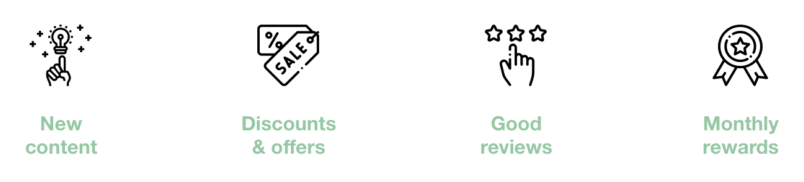
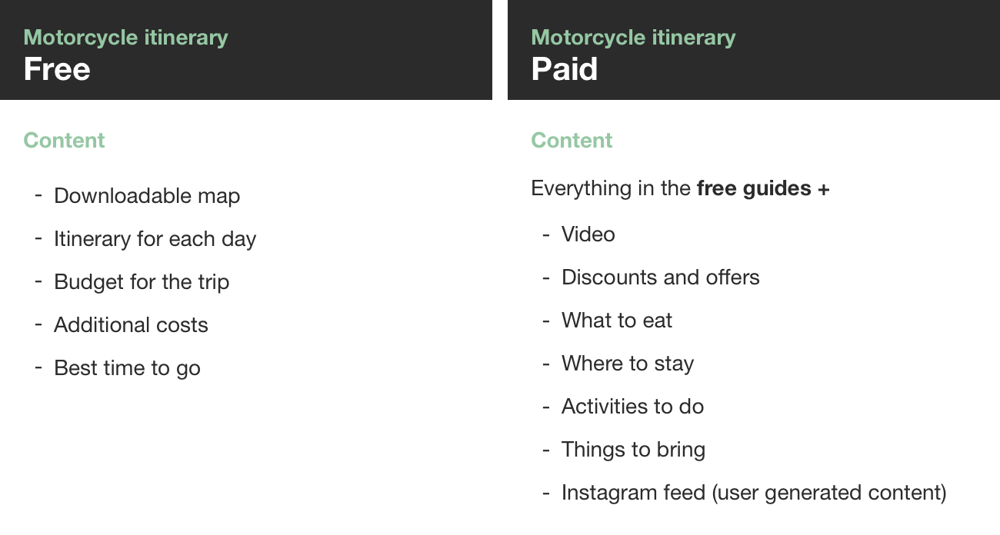

Openroads is an online travel agency dedicated to helping explorers book motorcycle experiences around the globe. Openroad’s main focus is to find ways to expand their business and is thinking of moving into the Indian market where their main partner, Royal Enfield, originates from.
Our goal was to help Openroads prioritise which direction to take its business, and help validate the viability of its current opportunities.
With many potential directions and avenues to explore, Openroads is currently set on the next phase in growing their business. But with limited resources in terms of manpower, time and money, Openroads needs help in determining which route would be best to help grow the business as well as be realistic and achievable.
By exploring the various opportunities presented to Openroads, we looked to see which opportunities were viable and would help grow and sustain the business. We determined features such as peer to peer rentals and AirBnB for motorcycle riders to be unrealistic with the business's current outlook and resources. We decided to focus on ways in which we could help Openroads in generating revenue that would tie into increasing their brand awareness as well as growing their customer base.
After researching, we were able to synthesise our ideas into a proposed solution that leverages existing content guides as well as partner materials to offer curated paid guides to be hosted on the site.
After our initial conversations with the client, we were able to breakdown what they saw as their current opportunities into three main points.
With the 3 week time limit, we decided to focus our scope on looking into the viability of a subscription based model.
To determine the viability of monthly subscriptions we conducted surveys and interviews to see what people expected from a subscription service.
We realised that monthly subscriptions were not viable as the client was constantly running tours overseas making it hard to consistently deliver new monthly content, as well as the lack of incentives for people to come back or continue their subscription.
We revisited the purpose and goals of the subscription service to understand other avenues that would deliver the same results. Goals the client wanted to achieve were:
After ideating, we synthesised our insights and decided to assess opportunities through paid content guides, especially since the client had mentioned she had partners that were interested in posting their guides on the site.
Through researching competitors, we realised that most offered a mix of guided tours and motorcycle rentals. We identified Wheelstreet, who offered guided tours for a tenth of the price as well as being partnered with bigger motorcycles companies that provided cheaper rental prices, as one of the main competitors of Openroads.
What set Openroads apart from most of the competition were their self guided itineraries that had been written by the owner, through her experiences of having rode the loops and trails in the guides.
When determining how we wanted to deliver the paid content to customers, we first discussed ideas around a downloadable pdf that people could purchase. Through research, we found that downloadable content was not the optimal solution. Our insights led us to believe that once people bought and downloaded the guide they wouldn’t have much reason to come back to the site. Also, after downloading, people could easily give the pdf that they bought to others.
In addition to the free guides, offer curated paid guides hosted on the site through accounts.
We believe the proposed solution could also help build the customer base which could be used for the peer to peer rental and airBnB projects.
We wanted to keep the free guides on the site, and use them to entice people into wanting more, thereby hopefully purchasing the paid guides.
After signing off the direction of our proposed solution with the client, we began to do a design studio within the group to start to iterate on initial sketches. Collating the designs, we picked the things we thought best conveyed our proposed solution and generated them into sketches we could start wireframing off.
A big focus when creating the wireframes was to consider the existing site designs and style and incorporating that into screens we created. We created the high fidelity wireframes to help our client visualise how the solution would exist in her current site, as well as the visual changes to the existing itinerary.
To test if we had all the pages needed we created three scenarios.
Once we completed the wireframes, we did usability testing. Through useful feedback we iterated on the solution to make it more concise and understandable.
When we were happy with the results of the flow of the site, we moved into creating a high fidelity prototype of our proposed solution. Once again we got useful feedback, and iterated over our designs where appropriate.
We separated the content into different modules so that they were easier to identify as well as thinking about responsiveness. We included features such as the accommodation module that could be tied into the upcoming AirBnB feature. Other modules can be customised as needed depending on what partners the client can acquire.
Consider a yearly membership instead of a one off payment for a guide
Consider expanding the target audience
Leveraging off people’s strengths in a team is the key to success
For this project, I was surprised when I naturally fell into the role of the project manager. I was able to distribute tasks well, taking into account what people preferred and wanted to focus on with their strengths. Even though my two colleagues worked on different parts, by facilitating conversation and information about what each were doing to the group, we were able to remain calm and confident.
Take the client along for the journey / Make sure the client is never surprised
Throughout the three weeks, making sure the client was onboard with the direction we proposed was a top priority. During the project, we had to change directions and tell the client their idea was not viable. By approaching the client about the issue openly and honestly, while making sure not to call their baby ugly, the client appreciated our advice and trusted us to take the project in the direction we saw best.